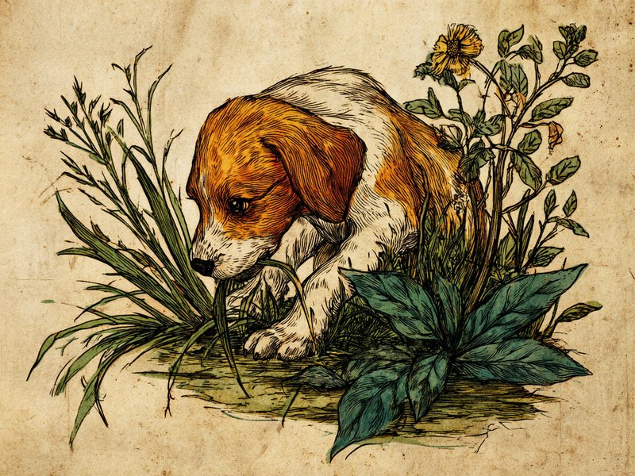

消化に良いわけでもないのに、なぜかむしゃむしゃ食べてしまう。 It doesn't even help digestion — so why do dogs munch on grass anyway?
よくある光景、でも理由は実ははっきりしていない
散歩中や庭先で、草をむしゃむしゃと食べる犬は少なくありません。あまりに日常的な光景なので気にも留めない飼い主も多いのですが、実は「なぜ犬が草を食べるのか」は獣医学的にもまだ完全には解明されていません。犬の消化器官は草の繊維質(セルロース)をほとんど分解できないため、栄養補給が目的とは考えにくく、それでも多くの犬が草を求めるという、なんとも「ざんねん」な謎に包まれた習性なのです。
有力な説はいくつかある
よく挙げられる説は大きく3つあります。ひとつは「野生時代の名残」説で、犬の祖先であるオオカミが獲物の胃の中に残った植物質を一緒に食べていた習慣が残っているという考え方。ふたつめは「食物繊維不足を補おうとしている」説で、お腹の調子を整えるために本能的に草を求めているという考え方。みっつめは「単純に味や食感が好き」説で、退屈しのぎや味覚的な好奇心から口にしているだけという考え方です。いずれも決定的な証拠はなく、実際には複数の理由が組み合わさっているのではないかと考えられています。
吐いてしまうこともあるが、心配しすぎなくてOK
草を食べたあとに吐き戻してしまう犬もいますが、これは草の繊維が胃の粘膜を刺激するためで、多くの場合は一時的なもの。むしろ「お腹の調子が悪いから、自分で草を食べて吐いて楽になろうとしている」という行動だと考える研究者もいます。ただし、頻繁に大量の草を欲しがる、繰り返し嘔吐する、食欲不振を伴うといった様子が見られる場合は、消化器の不調など別の原因が隠れている可能性もあるため、いつもと違うと感じたら獣医師に相談するのが安心です。
犬の祖先とされる野生のオオカミも、実は完全な肉食動物ではありません。獲物の内臓や胃の中身を通じて一定量の植物質を摂取しており、「肉食寄りの雑食」に近い食性を持っていることが分かっています。犬が草を欲しがるのも、こうした祖先譲りの名残なのかもしれません。